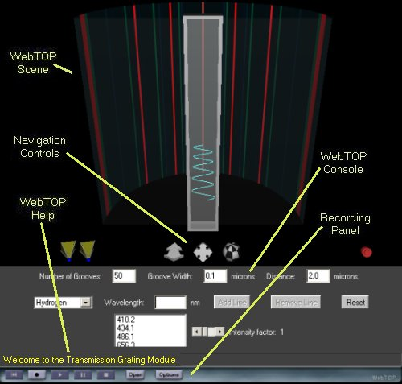
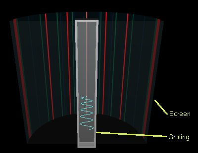
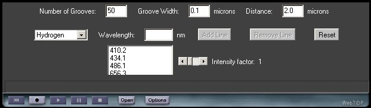

Diffraction - Transmission Grating: Directions
Under normal operation, your WebTOP window should look like the following:

The WebTOP window has four parts. The top portion is the active WebTOP scene.
The second portion is the VRML Navigation controls.
The third portion, the console, contains a message line that provides help on the operation of the Widgets and keyboard entry boxes.
The fourth portion is the recording panel that allows you to record and replay WebTOP sessions. You may scroll down to read on, or
select the appropriate link from the following items:
How To Change Parameters
When you start the module, you should see a figure similar to this:

The parameters that you can change are the light source,
the number of grooves, their width, and
the the distance separating them. You can also increase the intensity of the resulting lines.
These parameters can be changed
by using the WebTOP
console.
Using the WebTOP Console:
You may use the WebTOP console to change source parameters and to
control the scene. You may change the parameters by typing the values in the "Input
Boxes". You need to press the enter key after you change each of the
parameters. You may select the source from the pull down menu or build your own source by selecting User Defined typing the wavelength value at the provided box and pressing the Add Line button.
You may remove a line by selecting it from the list and pressing the Remove Line button.
You may view dim lines by increasing the Intensity Factor.
 |
Transmission Grating Console |
|